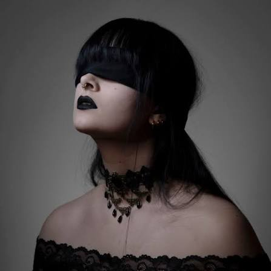

About the Artist


Maphra (stylized as MAPHRA) is a singer of metal and pop music. She is a contralto who can switch quickly between clean and harsh vocals. She has been active since 2025 and is represented by United Talent Agency.
Her first published music was a cover of "Lovely" by Billie Eilish and Khalid, released in February 2025. Her breakthrough came with a YouTube cover of "Doomed" by Bring Me the Horizon, which topped Billboard's Hot Hard Rock Songs chart.
Her full name and background have not been shared publicly. Her covers of Spiritbox's "Circle With Me" and The Plot In You's "Silence" have also drawn attention from fans and fellow musicians.
Background information: Wikipedia, "Maphra" (en.wikipedia.org/wiki/Maphra).